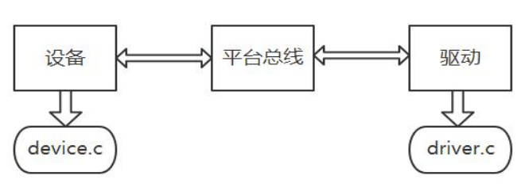

一、Platform 驱动简介
在嵌入式 Linux 驱动开发中，面对 SoC 内部集成的硬件（如 GPIO、UART、I2C 控制器等），直接操作寄存器的驱动往往存在可移植性差的问题——硬件引脚或地址变动时，需修改大量驱动代码。
为此，在 Linux 2.6 以后的设备驱动模型中，需关心总线、设备和驱动这三个实体，总线将设备和驱动绑定。在系统每注册一个设备的时候，会寻找与之匹配的驱动；相反的，在系统每注册一个驱动的时候，会寻找与之匹配的设备，而匹配由总线完成。
一个现实的 Linux 设备和驱动通常都需要挂接在一种总线上，对于本身依附于 PCI、USB、I2C、SPI 等的设备而言，这自然不是问题，但是在嵌入式系统里面，在 SoC 系统中集成的独立外设控制器、挂接在 SoC 内存空间的外设等却不依附于此类总线。基于这一背景，Linux 发明了一种虚拟的总线，称为 platform 总线，相应的设备称为 platform_device，而驱动成为 platform_driver。
显然，这样做的好处是，实现了此类设备和驱动的分离，增强设备驱动的可移植性。平台总线模型也叫 platform 总线模型。是 Linux 内核虚拟出来的一条总线，不是真实的导线。平台总线模型就是把原来的驱动 C 文件给分成了俩个 C 文件，一个是 device.c，一个是 driver.c。把稳定不变的放在 driver.c 里面，需要变得就放在了 device.c 里面。

Platform 机制的核心是将驱动程序拆分为纯硬件信息 和纯软件逻辑 两部分：
纯硬件信息 ：如寄存器物理地址、GPIO 编号、中断号等，由platform_device结构体描述；纯软件逻辑 ：如硬件初始化、数据读写等操作，由platform_driver结构体描述。
驱动开发中，仅需维护 platform_device 中的硬件信息，platform_driver 的软件代码一旦写好，无需修改即可适配不同硬件。
下面分别来看这两个部分的内容。
二、Platform device
platform_device用于描述硬件设备的具体信息（如地址、GPIO 等），其核心结构体定义如下：
1 2 3 4 5 6 7 struct platform_device {const char *name; int id; struct device dev; struct resource *resource;
platform_device支持两种方式描述硬件信息，可单独或同时使用：
驱动工程师自主定义硬件信息结构体，通过dev.platform_data挂载到platform_device。
步骤示例 ：
1 2 3 4 5 6 7 8 9 10 11 12 13 14 15 16 17 18 19 20 21 22 struct led_resource {unsigned long phy_baseaddr; unsigned long size; unsigned long gpio; struct led_resource led_hw = {0xC001C000 ,0x24 ,12 struct platform_device led_dev = {"tarena_led" , -1 ,
方式 2：内核标准 resource 结构体（规范统一）
复用内核struct resource结构体，按类型（地址、GPIO 等）描述硬件信息，通过resource数组挂载。
struct resource定义：
1 2 3 4 5 6 7 8 9 10 11 struct resource {resource_size_t start; resource_size_t end; const char *name; unsigned long flags; struct resource *parent, *sibling, *child;#define IORESOURCE_MEM 0x00000200 #define IORESOURCE_IRQ 0x00000400
步骤示例 ：
1 2 3 4 5 6 7 8 9 10 11 12 13 14 15 16 17 18 19 20 21 22 23 struct resource led_res[] = {0xC001C000 ,0xC001C000 + 0x24 - 1 , 12 ,12 , struct platform_device led_dev = {"tarena_led" ,-1 ,ARRAY_SIZE (led_res)
注册设备 platform_driver_register：
1 2 3 4 struct platform_device *);
三、Platform driver
platform_driver用于定义软件操作逻辑（如硬件初始化、用户接口），其核心结构体定义如下：
1 2 3 4 5 6 7 8 9 10 11 12 13 14 15 16 17 18 19 20 struct platform_driver int (*probe)(struct platform_device *); int (*remove)(struct platform_device *);void (*shutdown)(struct platform_device *);int (*suspend)(struct platform_device *, pm_message_t state);int (*resume)(struct platform_device *);struct device_driver driver;const struct platform_device_id *id_table;bool prevent_deferred_probe;
driver.name platform_device.name一致，作为匹配依据；probe 函数 ：硬件与驱动匹配成功后，内核自动调用，负责初始化硬件、注册设备接口等；remove 函数 ：驱动或设备卸载时调用，负责释放资源（与 probe 操作相反）。
驱动注册与卸载：
1 2 platform_driver_register(struct platform_driver *);struct platform_driver *);
四、核心流程：注册与匹配
（1）注册硬件与驱动
硬件节点注册：platform_device_register(&led_dev)，将 led_dev 添加到内核设备链表；
驱动节点注册：platform_driver_register(&led_drv)，将 led_drv 添加到内核驱动链表。
（2）内核匹配逻辑
内核遍历设备链表和驱动链表，通过比较 platform_device.name 与 platform_driver.driver.name 实现匹配。
（3）匹配成功后
内核自动调用 platform_driver.probe(pdev)，其中 pdev 指向匹配成功的 platform_device，驱动可通过 pdev 获取硬件信息。
五、实例
platform_lab.c：
1 2 3 4 5 6 7 8 9 10 11 12 13 14 15 16 17 18 19 20 21 22 23 24 25 26 27 28 29 30 31 32 33 34 35 36 37 38 39 40 41 42 43 44 45 46 47 48 49 50 51 52 53 54 55 56 57 58 59 60 61 62 63 64 65 66 67 68 69 70 71 72 73 74 75 76 77 78 79 #include <linux/module.h> #include <linux/of.h> #include <linux/platform_device.h> #define PLATFORM_LAB_NAME "platform_lab" struct platform_lab {int id;static int platform_lab_probe (struct platform_device *pdev) struct platform_lab *priv ;sizeof (*priv), GFP_KERNEL);if (!priv) {return -ENOMEM;"probed: name=%s id=%d\n" , pdev->name, pdev->id);return 0 ;static int platform_lab_remove (struct platform_device *pdev) "removed: name=%s id=%d\n" , pdev->name, pdev->id);return 0 ;static const struct of_device_id platform_lab_of_match [] ="edge,platform-lab" },static struct platform_driver platform_lab_driver =static int __init platform_lab_driver_init (void ) int ret;if (ret) {": failed to register driver: %d\n" , ret);return ret;": driver registered\n" );return 0 ;static void __exit platform_lab_driver_exit (void ) ": driver unregistered\n" );"GPL" );"orange-pi-edge" );"Minimal platform driver for Linux driver learning" );"1.0" );
platform_lab_testdev.c：
1 2 3 4 5 6 7 8 9 10 11 12 13 14 15 16 17 18 19 20 21 22 23 24 25 26 27 28 29 30 31 32 33 34 35 36 37 38 39 40 41 42 43 44 45 46 47 48 49 50 51 52 53 54 #include <linux/module.h> #include <linux/moduleparam.h> #include <linux/platform_device.h> #define PLATFORM_LAB_NAME "platform_lab" static void platform_lab_device_release (struct device *dev) static struct platform_device platform_lab_device =0 ,static int dev_id;int , 0444 );"platform device id, default 0" );static int __init platform_lab_testdev_init (void ) int ret;if (ret) {"_testdev: failed to register device: %d\n" ,return ret;"_testdev: registered %s.%d\n" ,return 0 ;static void __exit platform_lab_testdev_exit (void ) "_testdev: unregistered\n" );"GPL" );"Test helper: register platform_device for platform_lab" );
Makefile：
1 2 3 4 5 6 7 8 9 10 11 12 obj-m += platform_lab.o$(shell uname -r) /buildall: $(MAKE) -C $(KDIR) M=$(PWD) modulesclean: $(MAKE) -C $(KDIR) M=$(PWD) clean.PHONY : all clean
编译并观察结果：
1 2 3 4 makesudo insmod platform_lab_testdev.kosudo insmod platform_lab.kosudo dmesg | grep platform_lab | tail -n 8
输出：
1 2 3 [121.804980 ] platform_lab_testdev: registered platform_lab.0 121.845391 ] platform_lab platform_lab.0 : probed: name=platform_lab id=0 121.845509 ] platform_lab: driver registered
查看 driver 下绑定的 device：
1 2 3 4 5 6 > ls /sys/bus/platform/drivers/platform_lab/
其中 platform_lab.0 就是被这个 driver 绑定的设备。
查看 device 目录：
1 ls /sys/bus/platform/devices/platform_lab.0/
实测：
1 2 3 4 5 6 driver